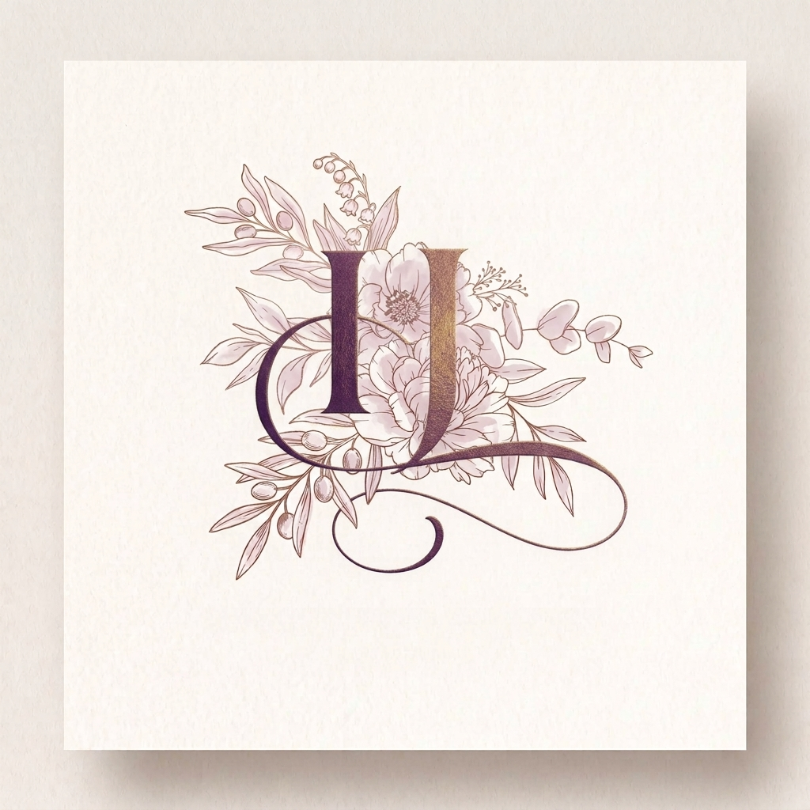
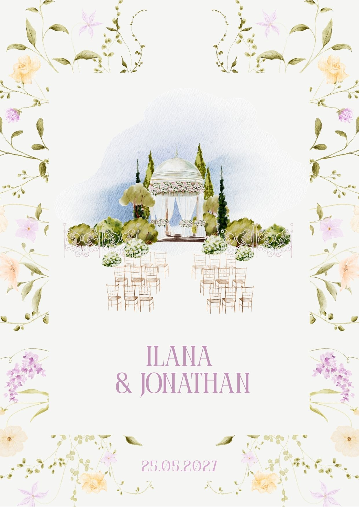

Cliquez pour découvrir
Ilana & Jonathan

Mairie
emplacement pour ton PNG
Houppa
emplacement pour ton PNG
1 / 3
Une pensée particulière à Papi Gérard et Pierre, Mamie Denise et Maryse, Tata Josiane ז״ל